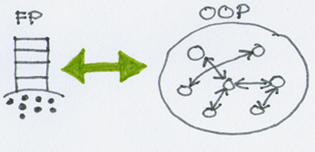

Published on 10 October 2011.
10 November 2014: Fixed broken link to pdf about parsing in Haskell. Not certain I got the same pdf.
I’ve wanted to learn Haskell for quite some time now. I’ve had the book Real World Haskell sitting in my bookshelf for a little over a year. I have read parts of it but never written any programs. This weekend I took the opportunity to learn some Haskell by writing code for a real project. What follows are my first impressions.
Ever since I learned about functional programming at university, I’ve wanted to use it in a real project. It feels like you can write beautiful solutions in a functional language that you just can’t in an object oriented language.
If that is true, how come more people don’t use functional languages? If I try using one in a real project, I might find out.
Why Haskell? I happened to come across it and it looked cool.
At work we write quite a lot of JavaScript code, but we lack a good tool for refactoring. The past week I wrote a simple Python script to rename a class. It only searched the source files textually for the old class name and replaced it with the new one.
I thought a tool could do a better job if it parsed the source code and analyzed the parse tree. Such a tool would also be able to perform more complex refactorings.
I thought Haskell would be a great language to build this tool in.
The first obstacle I found to writing code in Haskell was its syntax. It’s quite compact and I feel uncertain in which contexts certain constructs can be used.
It also seems to be quite common in libraries to define custom operators (things that look like >-> or -|-).
It looks intimidating at first, but I believe it’s just because I’m not used to it. The compact syntax also allows you to write quite beautiful code.
I feel quite confident that the Haskell code that I write works. Since the compiler checks for type errors (getting code to compile feels difficult at times), I feel that I only need a few simple tests to verify that the code does what it’s supposed to do.
Perhaps this is a false sense of confidence. I don’t yet know. But for sure I can skip writing some types of tests because the compiler will check for certain errors.
Compared to object oriented programming I feel that the steps I take when programming Haskell are not as small. Instead it feels like I need to think hard about a problem and then write the complete solution.
One thing that makes it hard to take small steps in Haskell is that your code will not compile unless all types are correct. It probably is possible to take small steps in Haskel, but not in the same way that I’m used to from OOP.
My first attempt at implementing a parser for JSON (a simpler problem to start with than JavaScript) was far from perfect. It was longer that it needed to be and contained some duplication. When I thought about how to refactor it to remove duplication and express the parsing logic in clearer way, the solution I discovered was a partition into two layers: one layer with primitives for building a parser and another layer to use those building blocks to build the JSON parser. (I had some help from Parsing with Haskell Introduction .)
When this happened I thought about Structure and Interpretation of Computer Programs. In particular how they described that a powerful way to solve a complex problem is to design a language in which that problem is trivial to solve. It felt like I had done exactly that, and it felt powerful.
When reading the code for the parser, I can focus on one layer at a time. Compared to OOP where you have a web of objects communicating with each other, it feels like the layered structure is easier to understand:

The reuse of code feels different in Haskell than in OOP. Firstly I think it is because the layered approach lends itself better to reuse than the web of objects. Secondly I think it is because you write pure functions with no side effects.
I had a pleasant weekend learning Haskell and I’m looking forward to learning more.
Site proudly generated by Hakyll.